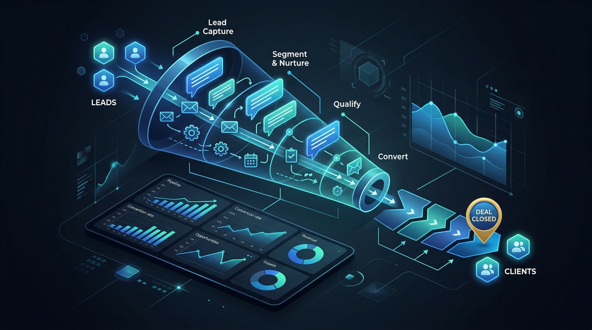

Key Takeaway: Most B2B businesses lose deals not because prospects said no — but because they never followed up enough times to earn a yes. Automation fixes this permanently.
Here is a statistic that should fundamentally change how you think about your sales process: 80% of B2B sales require 5 or more follow-up contacts after the initial outreach. Meanwhile, 44% of salespeople give up after just one follow-up. And 92% give up before the fifth touch.
Do the maths. The gap between "number of touches needed to close" and "number of touches most businesses attempt" is where the vast majority of B2B deals are lost. Not to competitors. Not to budget constraints. To silence — because no one followed up.
B2B lead nurturing automation is the systematic answer to this problem. And for SMB founders running lean operations without a dedicated sales team, it may be the single highest-leverage investment you can make in your business.
The Follow-Up Gap Killing Your Pipeline
Let's be specific about what the follow-up gap looks like in practice.
You send a cold email to a prospect who fits your ICP perfectly. They don't reply. What happens next? In most businesses: nothing. Maybe a second email three days later. Then silence.
But here's what's actually happening on the prospect's end. They received your email at 9 AM, were in a meeting by 9:15, and by noon had completely forgotten about it. They weren't uninterested — they were just busy. That's the B2B sales reality: prospects have intent, but limited attention.
Your job is not to send one great email. Your job is to be the business that stays visible, builds credibility over multiple interactions, and earns a conversation when the timing is right for them. Manual processes can't do this consistently. Automation can.
What B2B Lead Nurturing Actually Is
Lead nurturing is the process of building and maintaining relationships with prospects who are not yet ready to buy — through consistent, value-driven communication — until they are.
It's important to distinguish nurturing from cold outreach. Cold outreach is introduction. Nurturing is the relationship that follows.
Great B2B lead nurturing does three things:
- Builds credibility — each touchpoint demonstrates expertise and understanding of the prospect's problem
- Stays top of mind — when the prospect is finally ready to buy, your name is the first one they think of
- Overcomes objections progressively — instead of one pitch that tries to address everything, you handle objections one at a time over weeks
The businesses that win in B2B are rarely the ones with the best initial pitch. They're the ones who stayed visible and relevant while competitors went quiet.
Why Manual Nurturing Always Breaks Down
Every founder who's tried to nurture leads manually knows what happens: it works for a week, maybe two. Then a client deadline hits, a proposal comes in, or a team issue demands attention — and the nurture sequences get pushed to "later." Later becomes never.
Manual nurturing has five structural failure points:
- Recency bias — you naturally follow up with leads you recently heard from, while older leads (who may have higher intent) go cold
- Inconsistency — follow-up quality varies wildly depending on your energy and bandwidth on any given day
- No system for tracking — without automation, you cannot reliably know where every lead is in their journey
- Emotional fatigue — following up with someone for the 5th time manually feels awkward; automation removes this friction entirely
- Scale ceiling — a human can meaningfully nurture 20-30 active leads at once; automation handles hundreds simultaneously
The solution isn't trying harder. The solution is systematising the entire process so it happens automatically — regardless of what else is going on in your business.
The 7-Touch Automated Nurture Sequence
Here is a proven 7-touch B2B nurture sequence framework. This sequence works for consultants, coaches, IT service firms, and any B2B service business selling to founders or senior executives.
Touch 1 — Day 1: Personalised Introduction
A cold outreach email referencing something specific about the prospect's business. Not a pitch — a recognition. "I noticed [specific thing about them] — it's a common challenge for [type of business]. We've helped companies in your position do [specific outcome]." The goal is to open a conversation, not close a sale.
Touch 2 — Day 3: The Value Drop
No ask. Pure value. Share a piece of content — a blog post, a case study, a framework — that directly addresses the problem you referenced in Touch 1. Subject line: "Re: [their company name] — thought this might be useful." This positions you as a resource, not just a vendor.
Touch 3 — Day 7: Problem Amplification
Name the cost of inaction. "Most [type of business] we speak to lose roughly [X] per month by not having a system for [your solution area]. Worth a 15-minute conversation?" This touch is where fence-sitters often engage — because you've quantified the pain.
Touch 4 — Day 14: Social Proof
A specific client result. "We recently helped [type of company, no name needed] go from [before state] to [after state] in [timeframe]. Happy to walk you through exactly what we did." Real numbers, real results. This builds trust without being boastful.
Touch 5 — Day 21: Objection Handler
Address the most common reason your prospects don't move forward. For most service businesses: "We don't have the budget right now," "We're too busy to implement something new," or "We're not sure it'll work for us." Write one email that speaks directly to the objection your ICP most commonly voices.
Touch 6 — Day 28: The Soft Invitation
A direct but low-pressure CTA. "I've been sharing some thoughts over the last few weeks — I realise I haven't simply asked: is this something worth a 20-minute conversation? No pitch, just an honest look at whether we can help." Many deals close here because you've earned enough credibility by now.
Touch 7 — Day 35-40: The Graceful Exit
The breakup email. "I'll stop reaching out after this one — I don't want to be a nuisance. But if there's ever a time [problem you solve] becomes a priority, I'm always happy to help." This email has two powerful effects: it creates scarcity (they may not hear from you again), and it paradoxically re-engages a significant percentage of cold prospects.
This 7-touch sequence, delivered automatically, is your baseline. From here you can extend it, add triggers, or branch based on behaviour.
Segmentation: One Sequence Does Not Fit All
The above sequence is a starting framework. High-performing nurture systems segment prospects and deliver different sequences based on their characteristics.
Segment by role: A CEO and a Marketing Manager have different pain points and different language. The CEO cares about revenue and competitive position. The Marketing Manager cares about execution efficiency and reporting to leadership. Same product, different message.
Segment by industry: A consultant and an IT firm founder have different contexts. Generic messaging loses credibility. Specific messaging ("for consulting firms like yours") earns it.
Segment by funnel stage: A prospect who attended your webinar last month is in a different stage than someone who just received your first cold email. Their sequences should reflect where they are.
AI-powered nurturing systems handle this segmentation automatically, branching sequences based on who the prospect is and how they've engaged with your content.
Behavioural Triggers and Buying Signals
The most powerful upgrade to any nurture sequence is trigger-based automation — where actions by the prospect change what happens next in the sequence.
Key buying signals to watch for:
- Email opens (repeated): A prospect who opens your email three times in one day is reading it carefully. Flag for immediate personal outreach.
- Link clicks: If they click through to your pricing page or case studies, they're researching seriously. Fast-track them in the sequence.
- Website revisits: A prospect who visits your website 2-3 times in a week is in a buying cycle. Prioritise immediately.
- Reply to any email: Any reply — even "not interested right now" — is a data point. Adjust the sequence and respond personally within 2 hours.
Most manual nurturing misses these signals entirely. Automation captures them in real time and routes high-intent leads for immediate attention before the window closes.
Measuring What's Working
You cannot improve what you don't measure. A properly instrumented nurture system tracks:
- Open rate by touch: Which email in the sequence gets the most opens? Optimise subject lines for low-open touches.
- Reply rate by touch: Which touch drives the most conversations? Double down on that format.
- Conversion rate by sequence: What percentage of leads who enter a sequence eventually become clients? Benchmark and improve.
- Time to first reply: How many days on average before an interested prospect replies? This tells you how long your sales cycle actually is.
- Drop-off points: Where in the sequence do open rates crater? That's where you have a content problem to fix.
The goal is a data loop: send → measure → improve → send better. Over 3-6 months, this compounds into a system where you know exactly what message works for each segment, at each point in the journey.
How AI Makes Nurturing Fully Autonomous
Traditional marketing automation (Mailchimp, HubSpot sequences) can run the basic timing and delivery side of nurturing. But it cannot personalise at the level that drives B2B reply rates. Every email in a traditional sequence is the same template with a name substituted in. Prospects see through it.
AI-powered nurturing goes further in three ways:
Dynamic personalisation at scale: Before each email is sent, the AI researches the prospect's current context — recent LinkedIn activity, company news, website changes — and injects a relevant, specific reference. The email feels handwritten even though it was generated and sent automatically.
Adaptive sequencing: If a prospect opens Touch 3 four times, the AI recognises this as a high-intent signal and advances them to a faster-close sequence. If they go cold for 21 days, the AI switches them to a re-engagement sequence. The system adapts without human intervention.
Content alignment: AI matches the nurture email content to what's performing on your blog and social channels. If your recent post about "marketing cost for SMBs" is getting strong engagement, the AI incorporates that angle into active nurture sequences. Everything reinforces everything else.
The result is a nurture system that runs 24/7, never forgets a follow-up, improves continuously from its own data, and escalates the right leads to you at exactly the right moment.
Getting Started: Your First Nurture Sequence
You don't need to build the perfect 7-touch system on day one. Here's the minimum viable starting point:
Step 1: Pick your highest-priority segment — the one prospect type most likely to buy from you. Write one persona description covering their role, top three pain points, and most common objection.
Step 2: Write three emails based on the first three touches above. Day 1 intro, Day 3 value, Day 7 pain amplification. Even three automated emails beats 99% of what most B2B service businesses are doing.
Step 3: Load these into an email automation tool and set the trigger: anyone who enters your CRM as a new lead gets enrolled in this sequence automatically.
Step 4: After 30 days, review. Which touch had the highest open rate? Which drove replies? Use real data to add and improve touches 4-7.
Step 5: Scale. Once the sequence works for your first segment, replicate and adapt it for your next segment. Over time you'll have a suite of sequences that cover your full ICP.
The businesses that win at B2B in 2026 and beyond are not the ones with the biggest ad budgets or the most sales headcount. They're the ones with the best systems — automated pipelines that build relationships at scale, follow up without fail, and convert prospects into clients on a timeline the prospect controls.
Lead nurturing automation is not a nice-to-have. It is the foundation of a sustainable B2B pipeline. Build it now, and every lead you ever generate from this point forward will benefit from it.
Ready to automate your B2B lead nurturing?
AgentGrow's autonomous AI CBO builds and runs your entire lead nurture system — personalised sequences, behavioural triggers, and follow-ups — 24/7, without a marketing hire. Starting at $499/month.
Start Your Free 7-Day Trial →Frequently Asked Questions
What is B2B lead nurturing automation?
B2B lead nurturing automation is the use of automated email and message sequences to build relationships with prospects over time, moving them through your sales funnel without manual effort. Instead of one cold email and no follow-up, automation delivers 5-7 touchpoints that progressively build trust, address objections, and create buying intent — all triggered automatically based on time or behaviour.
How many follow-ups does it take to convert a B2B lead?
Research consistently shows that 80% of B2B sales require 5 or more follow-up touches. Yet 44% of salespeople give up after just one follow-up, and 92% stop after four. This gap — between 5 touches needed and 1-4 attempted — is where the majority of B2B deals are lost. Automation ensures every lead receives the full sequence, every time.
What should a B2B nurture email sequence contain?
A high-converting B2B nurture sequence should include: a personalised intro with a specific pain point reference (Day 1), a value-first resource or case study (Day 3), a direct problem-solution statement (Day 7), social proof such as a client result or testimonial (Day 14), an objection-handling email addressing common hesitations (Day 21), a soft call-to-action inviting a conversation (Day 28), and a final breakup email that sometimes re-engages cold prospects (Day 35-40).
How is B2B lead nurturing different from cold email outreach?
Cold email outreach is the first contact — reaching out to prospects who don't know you yet. Lead nurturing picks up from there, maintaining contact with people who have already been introduced to your business but haven't bought yet. Nurturing focuses on building trust over weeks or months through consistent, value-driven communication rather than making an immediate sale ask.
Can small businesses automate lead nurturing without a CRM?
Yes — modern AI marketing agents can run automated nurture sequences with just an email provider and a contacts list. However, a CRM significantly improves results by tracking each lead's journey, triggering sequences based on behaviour (email opens, link clicks, website visits), and alerting you the moment a lead shows high buying intent. For SMBs, a simple CRM integrated with email automation is the minimum viable stack.